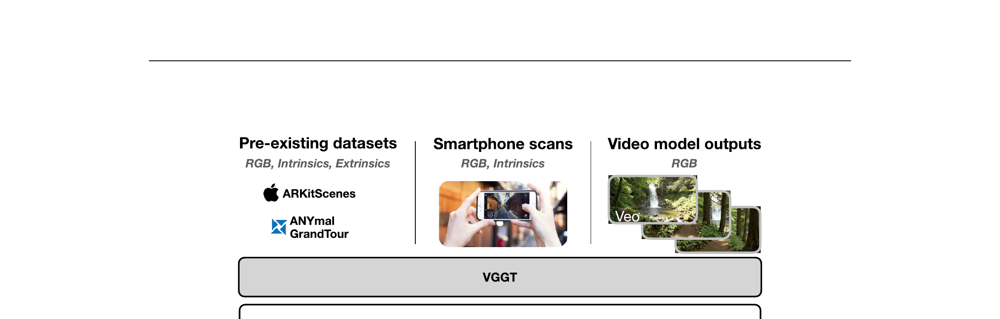

GaussGym: An Open-Source Real-to-Sim Framework for Learning Locomotion from Pixels
Escontrela 等 · 2025 技术报告 · arXiv:2510.15352 · Zotero 7JCR3UMJ
GaussGym 把手机/相机/已有 posed dataset 等真实视觉数据转成可在 GPU 物理仿真中实时渲染的 Gaussian 场景，让四足机器人直接从第一视角像素做强化学习，再部署到同一真实地点。
§1 Introduction：腿足机器人为何长期依赖深度，而不是直接从 RGB 学习
GPU physics 已让 locomotion RL 在数千环境中并行，但视觉通常被简化为 height map、depth 或 LiDAR；传统 raster/mesh 资产很难同时提供照片级外观和高吞吐。结果是策略能跨物理参数，却很少从真实 RGB 识别楼梯材质、场景语义或远处可通行结构。
GaussGym 将手机扫描、网络视频和视频模型生成环境转成 3DGS，再作为 drop-in renderer 接入 vectorized physics simulator。几何/碰撞仍由 mesh 与物理引擎承担，Gaussian 负责 RGB；系统面向 4096 并行环境等高吞吐设置，训练像素输入 locomotion/navigation policy，并初步展示真实楼梯 zero-shot transfer。
展开原文 · 核心定位
“integrates 3D Gaussian Splatting as a drop-in renderer”
§2 Related Work：GPU locomotion、视觉模拟与 Gaussian renderer
Isaac Gym/Sim、MuJoCo 等提供高吞吐物理，视觉资产多为 texture mesh；Habitat/ReplicaCAD 提供真实感场景，却不总适合高频腿足控制。NeRF renderer 视觉好但 ray marching 慢，难扩到数千并行环境。3DGS 的 tile rasterization 在照片级外观与吞吐之间提供新折中。
SplatSim、GSWorld 主要面向操控和对象刚体交互，GaussGym 把问题扩到大尺度地形、移动相机和像素 locomotion。它还允许生成视频作为场景来源，但视频到可导航 3D 几何仍需重建和碰撞校准，生成模型并没有直接提供物理。
§3 为什么 locomotion 也需要 Real-to-Sim
§4 多源数据到照片级 RL 场景

1. 采集目标地点
不要求昂贵专业扫描仪作为唯一入口。
输入是什么：评测或任务明确写出的起始场景、控制条件和目标要求。它规定模型从哪里开始、允许接收哪些信息、最后应该发生什么。
这一步究竟做什么：本步骤执行“采集目标地点”。具体来说，不要求昂贵专业扫描仪作为唯一入口。 这里处理的只是整条链路中的一个接口：把上一步的结果整理成下一步能够正确读取和继续计算的形式。
输出到哪里：一套固定且可复现的输入条件，后续所有模型都必须在这套条件下生成或行动。这个结果会交给下一步“拟合 splats 与物理几何”继续处理。
为什么不能省略：学习算法只能从它见过的经历中改进；这一步决定训练数据是否覆盖成功、失败和恢复状态。
2. 拟合 splats 与物理几何
视觉和碰撞表示保持配准。
输入是什么：来自上一步“采集目标地点”的产物：一套固定且可复现的输入条件，后续所有模型都必须在这套条件下生成或行动。本步骤还会按论文设置读取当前条件、时间步或训练信号。
这一步究竟做什么：本步骤执行“拟合 splats 与物理几何”。具体来说，视觉和碰撞表示保持配准。 它把真实世界素材转换为既能渲染外观、又能与物理模块对齐的数字表示。
输出到哪里：参数得到更新的模型，或能供下一轮训练使用的新监督信号。这个结果会交给下一步“大规模像素 RL”继续处理。
为什么不能省略：只复制外观不能产生可信交互；需要把视觉表示与碰撞、关节或动力学对应起来，策略训练才有物理意义。
3. 大规模像素 RL
并行采样地形、视角、动作和扰动。
输入是什么：来自上一步“拟合 splats 与物理几何”的产物：参数得到更新的模型，或能供下一轮训练使用的新监督信号。本步骤还会按论文设置读取当前条件、时间步或训练信号。
这一步究竟做什么：本步骤执行“大规模像素 RL”。具体来说，并行采样地形、视角、动作和扰动。 这个动作会真正改变环境，所以系统还要读取执行后的新观测，检查模型预期与现实之间的差距。
输出到哪里：一个或多个候选未来、动作或轨迹，以及必要的中间状态。这个结果会交给下一步“回到真实场景”继续处理。
为什么不能省略：它承担上下两步之间的接口；缺少它，前一步产生的信息无法以正确格式或正确含义传到下一步。
4. 回到真实场景
相似像素分布降低 sim-to-real 观察差异。
输入是什么：来自上一步“大规模像素 RL”的产物：一个或多个候选未来、动作或轨迹，以及必要的中间状态。本步骤还会按论文设置读取当前条件、时间步或训练信号。
这一步究竟做什么：本步骤执行“回到真实场景”。具体来说，相似像素分布降低 sim-to-real 观察差异。 这里处理的只是整条链路中的一个接口：把上一步的结果整理成下一步能够正确读取和继续计算的形式。
输出到哪里：经过本步骤处理、含义更明确的中间结果。这是图中这条链路的最终产物，随后会进入真实执行、模型更新或指标评测。
为什么不能省略：它把前面得到的内部结果落实为可执行动作、可训练模型或可解释指标，完成从方法到结果的最后一步。
§5 视觉真与物理真分开校准
GS 用于相机成像与运动模糊等视觉效果；碰撞地形、机器人动力学和接触仍由物理引擎承担。只有两者坐标/时间同步，像素动作才有因果意义。
§6 对 WAM 的意义
§7 边界
从图像恢复的几何与材质不能自动给出摩擦、顺应性和动态障碍行为；在未扫描地点泛化仍是另一个问题。
§8 实验归因与复现：视觉吞吐、物理吞吐和策略收益要分开
最小可信复现清单
- 每种数据源的相机恢复、尺度对齐、3DGS 训练和 mesh 提取流程。
- 视觉与 collision geometry 的注册误差和不可通行区域处理。
- 4096 环境下 physics FPS、render FPS、policy update FPS 分开计时。
- 相同 RL budget 下比较 depth、传统 RGB、domain randomization 与 GS RGB。
- 真实迁移报告相机标定、控制延迟、楼梯几何与光照变化。
GaussGym 证明 3DGS 有机会把照片级 RGB 带入大规模 locomotion RL；真正难点仍是视觉表面、碰撞几何和真实控制的三重对齐。